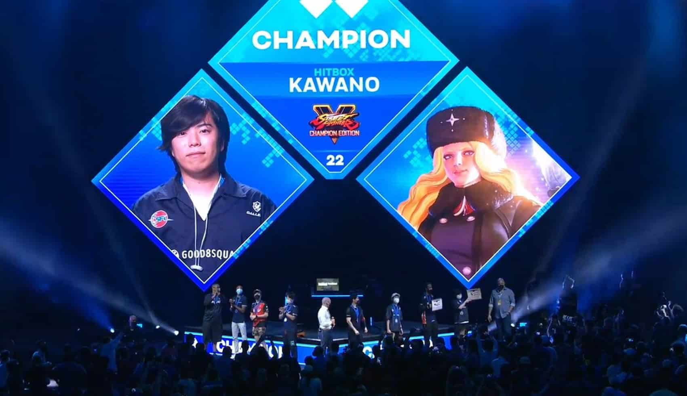
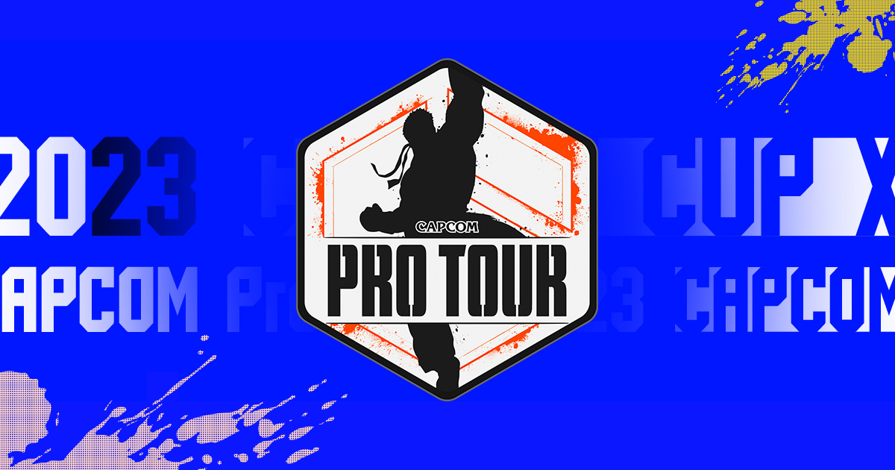
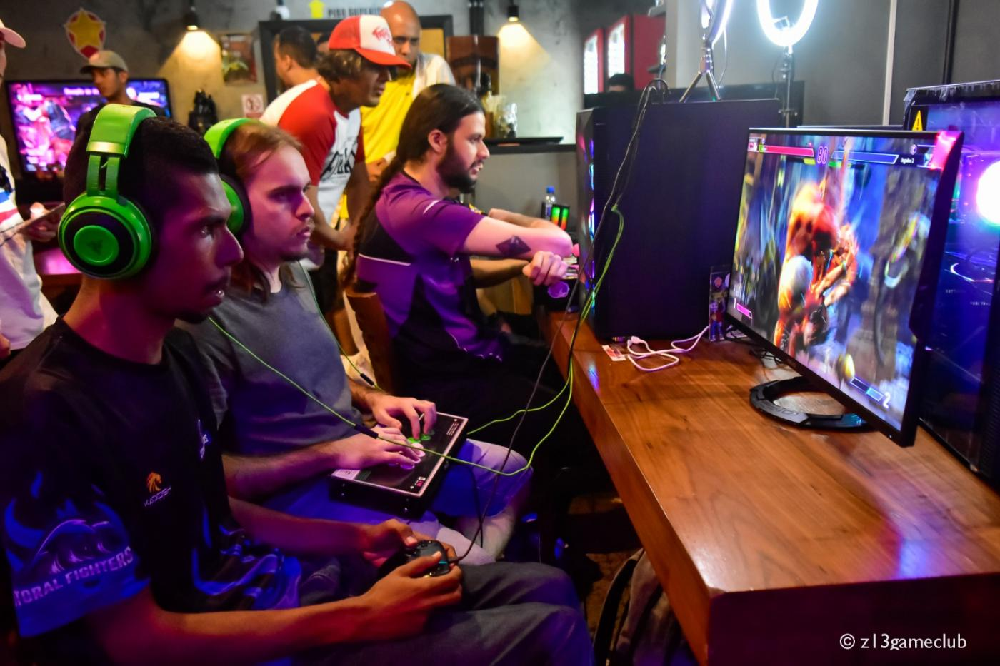
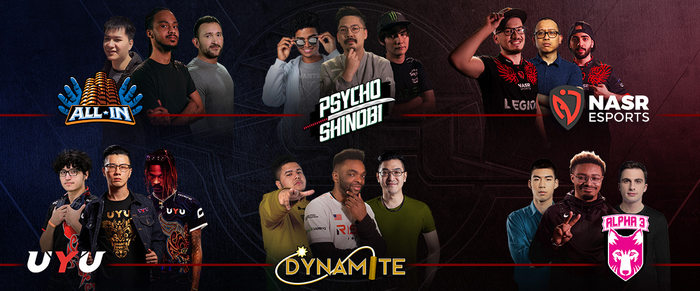
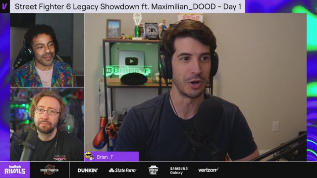
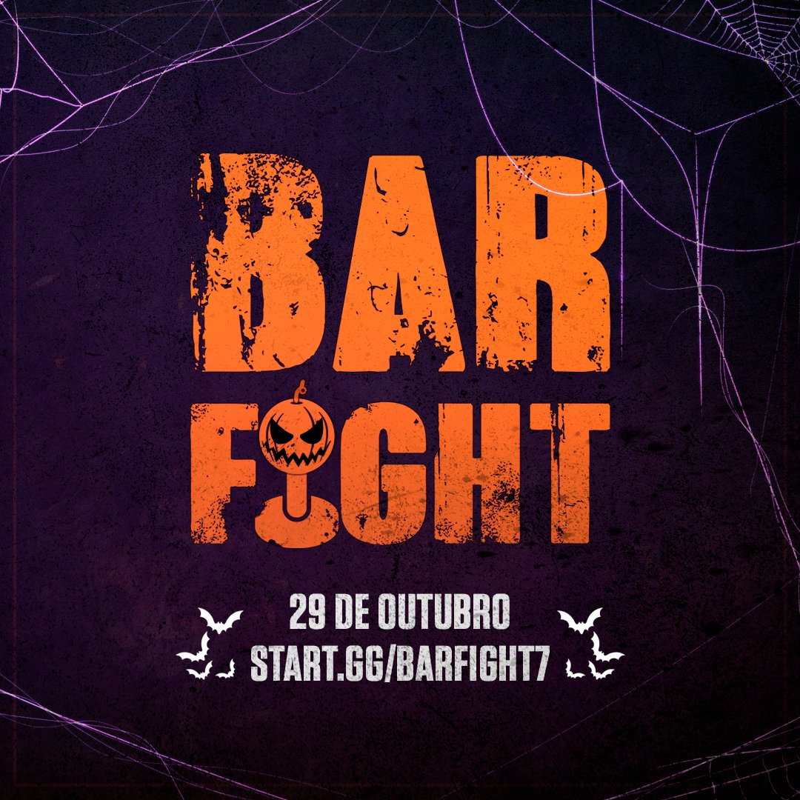

Street Fighter
O cenário competitivo de Street Fighter é uma comunidade global de jogadores, torneios e eventos dedicados à competição nos jogos da série Street Fighter. Essa cena competitiva é bastante rica e diversificada, com muitos eventos, jogadores profissionais e fãs apaixonados. Aqui estão alguns elementos-chave do cenário competitivo de Street Fighter: 
Existem inúmeros torneios de Street Fighter acontecendo ao redor do mundo. Alguns dos mais notáveis incluem o EVO (Evolution Championship Series), Capcom Cup, CEO (Community Effort Orlando), Final Round e muitos outros eventos locais, nacionais e internacionais. 
A comunidade de Street Fighter é ativa em fóruns online, mídias sociais e eventos locais. Os jogadores trocam informações, discutem estratégias, compartilham técnicas e organizam encontros para treinar e jogar. 
Muitos jogadores em todo o mundo dedicam tempo e esforço para se tornarem profissionais em Street Fighter. Eles participam de torneios, treinam intensamente e competem em busca de prêmios em dinheiro e prestígio.
Os torneios de Street Fighter podem ocorrer em várias plataformas, incluindo fliperamas, consoles e PC. O Street Fighter V, por exemplo, foi lançado para PlayStation 4 e PC e é amplamente utilizado em competições.
A Capcom, empresa que desenvolve a série Street Fighter, está envolvida na promoção e apoio ao cenário competitivo. Eles lançam atualizações e patches para manter o equilíbrio do jogo e frequentemente promovem torneios e eventos.
Muitos torneios de Street Fighter são transmitidos ao vivo pela internet, permitindo que os fãs de todo o mundo assistam às partidas e torçam por seus jogadores favoritos. Plataformas como o Twitch desempenham um papel significativo na transmissão de torneios.
AOs torneios de Street Fighter incluem várias categorias, como torneios de equipes, torneios solo, torneios por convite e eventos abertos. Os jogadores competem individualmente ou em equipes, dependendo do formato do torneio.
Os jogadores profissionais de Street Fighter competem não apenas pela glória, mas também por prêmios em dinheiro substanciais. Os torneios importantes oferecem premiações significativas, atraindo jogadores talentosos.
O cenário competitivo de Street Fighter é uma parte vital da comunidade de jogos de luta e continua a crescer, com novos jogos e atualizações sendo lançados regularmente para manter o interesse dos jogadores e espectadores.
EVO MOMENT 37